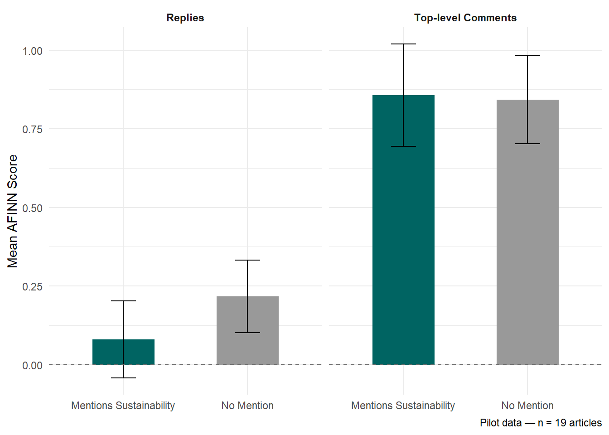
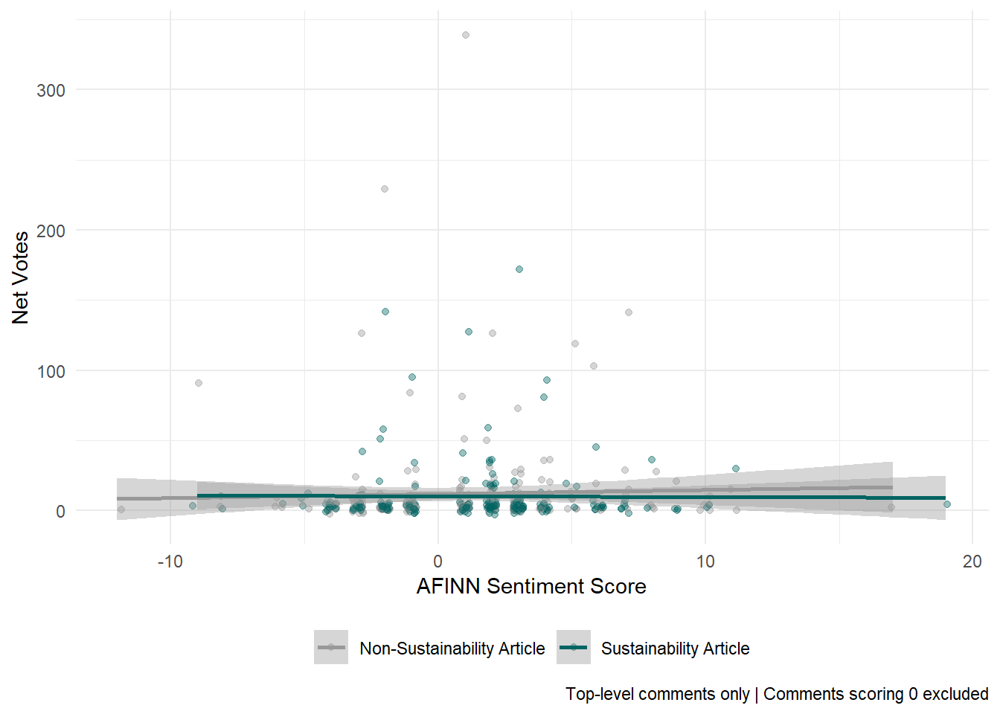

Preamble
This blog post accompanies my poster, presented at NASSM 2026 in Puerto Rico. The project I am presenting, “Green Riding or Green Washing?”, aims to investigate how consumers react to the inclusion of sustainability-related information in sport product marketing through the lens of message source and message framing. To investigate this, I use data from Pinkbike, a mountain bike news and review website. Specifically, I collect article text from product reviews and press releases, along with the comments posted by users on those articles. To analyze the data, I use sentiment analysis to determine the overall positivity or negativity of comments, and then compare the reactions to different kinds of articles and to articles which do or do not contain sustainability-related information.
Warning
Currently, this project is in the pilot stage. I am awaiting a response from Pinkbike representatives as to whether they will allow a more thorough data collection. As it stands, I have manually collected data from 19 articles, with over 2,000 comments, but more data is needed to provide anything more than initial impressions/takeaways.
I am actively searching for collaborators on this project, so if you have interest in sustainable marketing in sport, textual analysis, or web scraping, please don’t hesitate to reach out to me at lwarwick@ithaca.edu!
Below I provide: - The poster’s abstract
Some preliminary analysis of the pilot data
My future plans for the project
Poster and abstract references
Thanks for reading!
Preliminary Analysis
One of the first things that stuck out from my analysis of the pilot data was related to the differences in responses to the inclusion of sustainability not in the articles, but in the comments themselves. It appears that replies that mention sustainability are more negative than top-level comments which mention sustainability. I’m curious to see if this pattern holds in the full dataset.
Another thing that popped up in this initial analysis was how to handle the voting system that Pinkbike uses for comments. On Pinkbike, users can up or down-vote both top-level comments and replies. This gives us the opportunity to adjust our analysis to account for community opinion (for lack of a better term). For example, a top-level comment may praise a company’s sustainability record (thus having a positive sentiment), and get, say, 5 upvotes and 3 downvotes. Meanwhile, a reply to that comment which contends that the company is greenwashing (a negative sentiment), may get 25 upvotes and 4 downvotes. Without accounting for the votes, we would see the comments as balanced on the article. However, if we weight by net votes, we would see that the wider community supports the negative view much more than they support the positive view. You can see the difference in weighted and unweighted sentiment scores below.

Abstract
The manufacture of sport products has significant environmental impacts through direct emissions, indirect emissions, and waste. In response to the global climate crisis, some manufacturers of sporting goods have adjusted their processes to reduce their impact on the environment. As a result, manufacturers have an opportunity to leverage a positive environmental image as a competitive advantage if they can communicate effectively. Research has shown that sport organizations are increasingly communicating their sustainability efforts (McCullough et al., 2020), but that source credibility is a key concern (Inoue & Kent, 2011). From the consumer perspective, research has shown that environmental concern is associated with purchase intention among sport fans (Thormann et al., 2025). Additionally, sport participants have shown high willingness to pay for more environmentally sustainable products (Spindler et al., 2023). Despite this appetite for sustainability among consumers, a significant gap remains in understanding how to most effectively market the environmental sustainability of sport products (Anagnostopoulos et al., 2025). Specifically, there has been limited research into how consumer perceptions relate to the communication of the sustainability of sport products. Therefore, the purpose of this research is to examine how consumers react to marketing communications that highlight sustainability in the context of the mountain bike industry.
This research utilizes the lens of message framing and message source, two key concepts in environmental communication (Kim & Kim, 2014). To investigate the impact of message framing and message source on consumers’ reaction to marketing communications, this research will collect data from the mountain bike news website Pinkbike.com. Pinkbike represents an ideal real-world context for data collection as it publishes both product reviews by journalists and press releases directly from mountain bike manufacturers. Pinkbike also maintains a comment section on each article, allowing for an assessment of consumer sentiment and reaction to each article. Data will be scraped for bicycle review articles and press releases from the past five years, and each article will be classified based on whether the articles include reference to product sustainability. The comments from each article will be analyzed using sentiment analysis (Gong et al., 2021) and topic modelling in the form of Latent Dirichlet Allocation (LDA) to establish themes, similar to previous research (Hayduk & Newland, 2020). The impact of message framing drives the following research question: Does comment sentiment and/or themes differ between articles which discuss sustainability and those that do not? The impact of message source drives the second research question: For articles discussing sustainability, does comment sentiment and/or themes differ between review articles and press releases?
This research aims to address gaps in the sport management literature by investigating the environmental communication of sport products through the lens of message framing and source. Additionally, it extends previous research on sport consumers’ preferences for sustainable products by investigating expressed sentiments rather than purchase intention or willingness to pay. It will also provide insights for manufacturers by highlighting which communication channels and strategies are most effective for leveraging the positive environmental attributes of their products.
Next Steps
As a work in progress, there a lot of things to do! The main thing, as mentioned above, is to get in contact with Pinkbike representatives to figure out a solution for data collection. The inital plan was to scrape the needed data, but the website’s Cloudflare settings make that difficult. So if you know someone from Pinkbike/Outside, let me know!
I’d also like to run a more robust LDA of comments, as sentiment analysis alone is a little crude and doesn’t give us the full story. It’s a little pointless for the limited amount of pilot data, but as I collect more, it is definitely the next step analysis-wise.
You can follow along with the project on the project’s Github page. But if you’re that committed, why not reach out so we can collaborate?
References
Anagnostopoulos, C., Yaqot, M., Kolyperas, D., & Chadwick, S. (2025). Research on sport marketing and sustainability: An integrated bibliometric machine learning approach. Sport, Business and Management. https://doi.org/10.1108/SBM-08-2024-0105
Gong, H., Watanabe, N. M., Soebbing, B. P., Brown, M. T., & Nagel, M. S. (2021). Do Consumer Perceptions of Tanking Impact Attendance at National Basketball Association Games? A Sentiment Analysis Approach. Journal of Sport Management, 35(3), 254–265. https://doi.org/10.1123/jsm.2020-0274
Hayduck, T., & Newland, B. (2020). Signalling Expertise in Sport Entrepreneurship: A Mixed-Methods Approach Using Topic Modeling and Thematic Analysis. Journal of Applied Sport Management. https://doi.org/10.7290/jasm120102
Inoue, Y., & Kent, A. (2012). Investigating the role of corporate credibility in corporate social marketing: A case study of environmental initiatives by professional sport organizations. Sport Management Review, 15(3), 330–344. Scopus. https://doi.org/10.1016/j.smr.2011.12.002
Kim, S.-B., & Kim, D.-Y. (2014). The Effects of Message Framing and Source Credibility on Green Messages in Hotels. Cornell Hospitality Quarterly, 55(1), 64–75. https://doi.org/10.1177/1938965513503400
McCullough, B. P., Orr, M., & Kellison, T. (2020). Sport Ecology: Conceptualizing an Emerging Subdiscipline Within Sport Management. Journal of Sport Management, 34(6), 509–520. https://doi.org/10.1123/jsm.2019-0294
Hu, M., & Liu, B. (2004). Mining and summarizing customer reviews. Proceedings of the ACM SIGKDD International Conference on Knowledge Discovery & Data Mining, Seattle, WA.
Nielsen, F. Å. (2011). A new ANEW: Evaluation of a word list for sentiment analysis in microblogs (arXiv:1103.2903). arXiv. https://doi.org/10.48550/arXiv.1103.2903
Spindler, V., Schunk, H., & Könecke, T. (2023). Sustainable consumption in sports fashion – German runners’ preference and willingness to pay for more sustainable sports apparel. Sustainable Production and Consumption, 42, 411–422. https://doi.org/10.1016/j.spc.2023.05.003
Thormann, T. F., Braksiek, M., & Wicker, P. (2025). Football Fans’ Purchase Intention of Sustainable Merchandise Products. Journal of Sport Management, 1(aop), 1–13. https://doi.org/10.1123/jsm.2024-0348